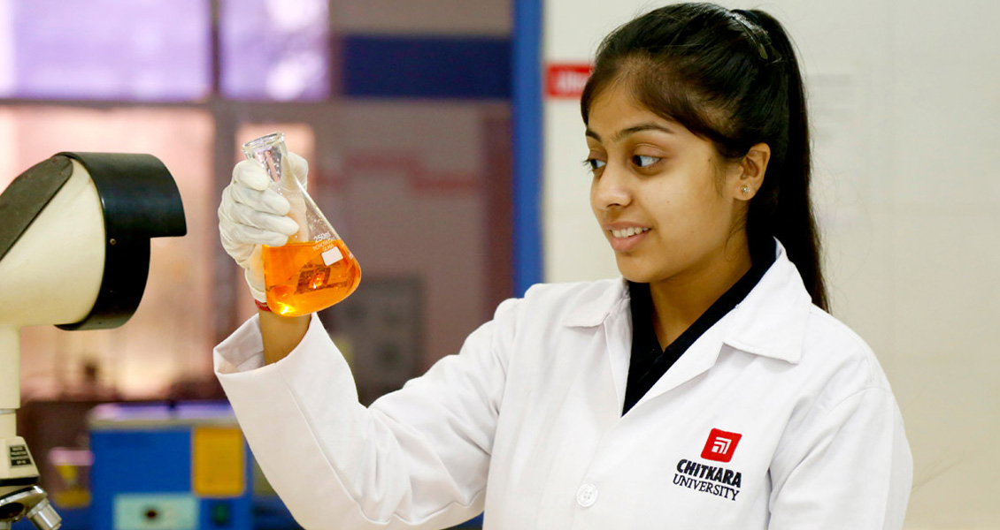

Featured articles





December 10, 2021 - 2 minute read
SAEINDIA, a professional Society of Automotive Engineers, today announced the start of the Virtual Rounds of the 15th edition of much-awaited BAJA SAEINDIA series (Digital Event). This year also, Chitkara University is hosting the Virtual round of BAJA SAEINDIA 2022 at Punjab campus.
203 entries across 185 Engineering colleges in India were received for BAJA SAEINDIA 2022, out of which 130 teams are registered for conventional m-BAJA & 73 teams are registered for the e-BAJA event. Teams across 25 cities have registered along with 2 international teams, from North America and Nepal. BAJA SAEINDIA tasks the students to conceptualize design, build, test & validate a single-seater four-wheeled The 15th Edition of BAJA SAEINDIA has been fractionated into 3 phases, the preliminary round, which was conducted in September; the virtual round, and a physical round, in the month of February and March 2022. All-Terrain Vehicle (ATV) to take part in a series of events, being conducted in three phases this year, giving the teams an opportunity to participate virtually in PHASE-1 & 2 or physically in PHASE-3 or both.
Upon successful conduction of the Preliminary round in September, the virtual round is ready to begin in full swing. Embracing the current pandemic challenges, this round will be held on a digital platform involving static as well as dynamic events, considering the health concerns of all stakeholders involved.
This round will incorporate Virtual Dynamic events with the help of Automotive Simulation Software, IPGCarMaker, combined with Digital Static Events for 2022 edition, similar to BAJA SAEINDIA 2021. This includes the Virtual Static Events Evaluation such as Design, Cost, Manufacturing & Sales Presentation as well as the Dynamic Events such as Acceleration, Brake, Gradeability, Suspension & Traction, Manoeuvrability, and All-Terrain Performance held virtually through IPG CarMaker software.
Featured articles